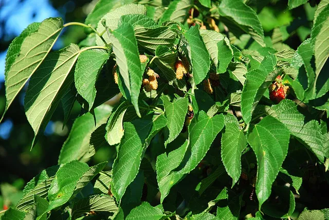

Wild fruit · May–Jul
Mulberry
Morus rubra
Also called Red mulberry, Mûrier
Mulberry is a wild fruit you can forage from May to July in Ontario. Tree with toothed, often mitten-shaped leaves; long berries ripen to dark purple (or white) and stain everything.

When is mulberry in season in Canada?
Mulberry is usually in season May to July. Timing shifts with weather, latitude and altitude.
Where does mulberry grow in Canada?
Mulberry grows in Ontario. Regions: Ontario.
How do you recognise mulberry?
Tree with toothed, often mitten-shaped leaves; long berries ripen to dark purple (or white) and stain everything.
How do you harvest mulberry?
Pick only fully ripe fruit that comes away easily, into a shallow container so it doesn't crush. Leave plenty on the plant for birds and wildlife.
How do you eat mulberry?
Fresh, pie, jam.
How do you store mulberry?
Freeze or dry.
What is mulberry good for?
Vitamin C, Iron & calcium.